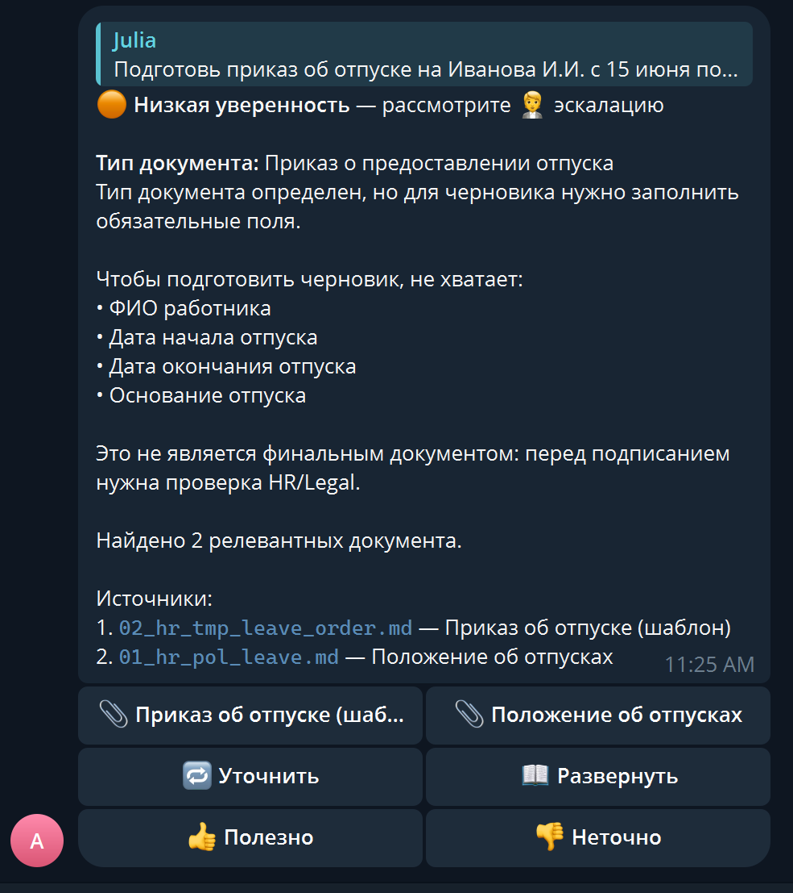

Ассистент для поиска
по документам
A search assistant for
your documents
Сотрудник задаёт вопрос в Telegram. Ассистент находит ответ в корпоративных правилах, инструкциях и шаблонах — и показывает, из какого файла он его взял. An employee asks a question in Telegram. The assistant finds the answer inside corporate rules, manuals and templates — and shows exactly which file it came from.
В двух словах At a glance
Ассистент работает только по переданному корпусу: внутренние правила, нормативные акты, юридические шаблоны, инструкции по работе с клиентами и грузами. This is not a general chatbot and not an internet search engine. The assistant answers only from the document base it was given: internal policies, regulations, legal templates, and customer/cargo handling manuals.
При недостатке источников или низкой уверенности ассистент отказывается и направляет к человеку. Текст собирается только из найденных фрагментов. If the documents don't contain an answer, or confidence is low — the assistant says so honestly and refuses to invent text. The user sees right away that the question needs a human.
- Сколько дней дополнительного отпуска положено сотруднику с тремя детьми?
- Какой шаблон договора использовать для разового подрядчика?
- Что делать, если груз пришёл с повреждённой упаковкой?
- Нужен ли приказ при переводе сотрудника на другую должность?
- How many extra vacation days is an employee with three children entitled to?
- Which contract template should I use for a one-off contractor?
- What's the procedure if cargo arrives with damaged packaging?
- Do we need a formal order to transfer an employee to another role?
Как выглядит ответ What the answer looks like
Каждый ответ содержит confidence, источники и кнопки обратной связи. Для черновиков документов бот сначала собирает недостающие поля и отправляет кейс на проверку HR/Legal. The user does not receive a vague model reply: each answer carries confidence, sources and feedback buttons. For document drafts, the bot first collects missing fields and marks the case for HR/Legal review.

- UX проверяемый:Verifiable UX: каждый ответ несёт список источников, поэтому сотрудник может открыть первичный документ. every answer carries source references, so an employee can open the underlying document.
- Юр-риск ограничен:Legal risk is bounded: модель определяет тип документа и поля, но финальный текст собирается только из кодового шаблона. the model detects document type and fields, while final wording is assembled only from code templates.
- Feedback замыкает цикл:Feedback closes the loop: негативная оценка попадает в review_queue и показывает, где нужно усилить базу знаний. negative ratings go to review_queue and show where the knowledge base needs work.
Как устроен How it works
Ассистент работает по принципу RAGRetrieval-Augmented Generation — подход, при котором ассистент сначала находит подходящие куски документов, и только потом формулирует ответ — строго по этим кускам. Поэтому он опирается на найденный текст и всегда показывает источник.Retrieval-Augmented Generation — the assistant first finds matching document fragments, then writes its answer strictly from them. As a result it can't invent text and can always show its sources. — ответы строятся с опорой на найденные документы. Три шага: The assistant follows the RAGRetrieval-Augmented Generation — подход, при котором ассистент сначала находит подходящие куски документов, и только потом формулирует ответ — строго по этим кускам. Поэтому он опирается на найденный текст и всегда показывает источник.Retrieval-Augmented Generation — the assistant first finds matching document fragments, then writes its answer strictly from them. As a result it can't invent text and can always show its sources. pattern — retrieve, then generate. Three steps:
-
Разбираем документы заранее Preparing the documents
Большие тексты режутся на небольшие куски — примерно по абзацу. Каждому куску считается числовой «отпечаток смысла» — эмбеддингEmbedding — вектор примерно из тысячи чисел, описывающий смысл фрагмента текста. Чем ближе два вектора друг к другу, тем ближе смысл.Embedding — a vector of roughly a thousand numbers describing the meaning of a text fragment. The closer two vectors are, the closer the meanings.. Тексты и их отпечатки складываются в базу. Long documents are sliced into short pieces — roughly a paragraph each. Every piece gets a numeric "meaning fingerprint" — an embeddingВектор примерно из тысячи чисел, описывающий смысл фрагмента текста. Чем ближе векторы, тем ближе смысл.A vector of hundreds of numbers describing the meaning of a text fragment. The closer two vectors are, the closer the meanings.. Pieces and their embeddings are stored in the database.
-
Ищем подходящее на каждый запрос Searching on every query
Для вопроса пользователя ассистент одновременно ищет похожие по смыслу куски (через сравнение отпечатков) и куски, в которых встречаются нужные слова. Такой совмещённый поиск называют гибриднымHybrid retrieval — параллельный поиск по смыслу (векторный) и по словам (BM25). Их результаты объединяются с весами, и куски, найденные обоими способами, получают больший вес.Hybrid retrieval — running a meaning-based (vector) search and a word-based (BM25) search in parallel, then merging the results. Items found by both win.: он находит и переформулированные ответы, и точные термины. For each question the assistant runs two searches in parallel: meaning-based (comparing embeddings) and word-based (looking for matching terms). This combined approach is called hybrid retrievalПараллельный поиск по смыслу (векторный) и по словам (BM25). Их результаты объединяются с весами, и куски, найденные обоими способами, получают больший вес.Running a meaning-based (vector) search and a word-based (BM25) search in parallel, then merging the results with weights. Pieces found by both methods are scored higher. — it catches paraphrased answers and exact terminology alike.
-
Собираем ответ Building the answer
Найденные куски передаются языковой модели с жёстким указанием: отвечать только по этим текстам, никаких догадок. К ответу прикладывается список источников — название файла и раздел. Если уверенности недостаточно, ассистент отказывается отвечать и предлагает обратиться к человеку. The retrieved pieces are passed to a language model with a strict instruction: answer only from these texts, no guessing. The reply includes source references — file name and section. If confidence is too low, the assistant refuses and suggests asking a human.
Под капотом Under the hood
Каждый кирпич выбран осознанно: всё работает на собственном сервере, без внешних SaaS-зависимостей кроме одной модели для эмбеддингов и языковых ответов. Each building block is chosen deliberately: everything runs on a self-hosted server, with no external SaaS dependencies except a single model provider for embeddings and language answers.
Техническая реализация Technical implementation
Это рабочий MVP. Сервисы поднимаются через Docker Compose, n8n остаётся транспортным оркестратором, RAG-логика, форматирование ответов и подготовка черновиков вынесены в FastAPI. This is a working MVP, not just a concept: services run through Docker Compose, n8n stays as the transport orchestrator, while RAG logic, answer formatting and safe draft preparation live in FastAPI.
Индексация и метаданные Indexing and metadata
Документы режутся token-splitter'ом по 500 токенов, сохраняются с file, section, date, source_url, version и embedding. Manifest защищает от случайной индексации всего корпуса. Documents are split into 500-token chunks and stored with file, section, date, source_url, version and embedding metadata. The manifest prevents accidental full-corpus indexing.
Поиск и уверенность Search and confidence
Векторы и тексты хранятся в Postgres + pgvector. На текущем масштабе 583 чанка поиск идёт как in-memory hybrid: FastAPI забирает активные chunks из БД одним запросом и считает cosine similarity, BM25 и section-aware rerank в памяти процесса. Так быстрее, чем гонять SQL за каждым ответом. Ускоряющий SQL vector index (HNSW) подключится при росте корпуса до ~10k chunks — для меньшего объёма он избыточен. Vectors and texts live in Postgres + pgvector. At the current 583-chunk scale retrieval runs as in-memory hybrid: FastAPI fetches the active chunks from the DB in one query and scores cosine similarity, BM25 and section-aware reranking inside the process — faster than round-tripping SQL on every request. The pgvector SQL index (HNSW) kicks in once the corpus reaches ~10k chunks; below that it is overkill.
Контур API API surface
FastAPI отдаёт /ask, /feedback, /history, /metrics, /analytics, /docs/summary, /document/type-detection и /health со статусом retrieval/index. OpenAPI экспортируется для проверки контракта. FastAPI exposes /ask, /feedback, /history, /metrics, /analytics, /docs/summary, /document/type-detection and /health with retrieval/index status. OpenAPI is exported for contract checks.
Telegram без публичного туннеля Telegram without a public tunnel
Polling bridge забирает updates у Telegram и передаёт их во внутренний webhook n8n. Доступ ограничен whitelist'ом, секреты лежат в env. A polling bridge pulls Telegram updates and posts them into n8n's internal webhook. Access is whitelist-based, secrets stay in environment variables.
Черновики документов Document drafts
Запрос “подготовь приказ...” в Telegram проходит через обычный /ask: API определяет тип документа и возвращает недостающие поля. Полный черновик собирается только кодовым шаблоном: сейчас это приказ о приёме и приказ об отпуске. A “prepare an order...” Telegram request goes through the regular /ask path: the API detects the document type and returns missing fields. A full draft is assembled only through code templates: hiring order and vacation order in the current MVP.
Наблюдаемость Observability
В Postgres попадают вопрос, тип запроса, confidence, источники, latency, модель, токены и оценка пользователя. Плохие ответы уходят в review_queue. Postgres stores the question, request type, confidence, sources, latency, model, tokens and user rating. Bad answers go into review_queue.
Что важно для запуска What matters for rollout
MVP уже показывает end-to-end сценарий, но промышленный запуск зависит от данных и правил эксплуатации: кто владеет корпусом, кто разбирает спорные ответы, какие источники считаются юридически допустимыми. The MVP already demonstrates the end-to-end flow, but production rollout depends on data ownership and operating rules: who owns the corpus, who reviews disputed answers, and which legal sources are acceptable.
- Данные Data Нужен реальный пакет внутренних документов с датами редакций и ответственными владельцами. A real internal document pack is needed, with revision dates and accountable owners.
- Доступ Access Для пилота достаточно whitelist Telegram user_id; для этапа 2 нужна ролевая модель HR / Legal / руководитель. Telegram user_id whitelist is enough for the pilot; phase 2 needs HR / Legal / manager role-based access.
- Источники Sources Текущий внешний источник — конспект главы 11 ТК РФ с canonical URL. Для production нужен согласованный источник полного актуального текста. The current external source is a Chapter 11 Labour Code summary with a canonical URL. Production needs an agreed source for the full current text.
- Эксплуатация Ops Нужен владелец review_queue, лимиты LLM-провайдера и регламент обновления базы знаний. The team needs a review_queue owner, LLM provider limits and a knowledge-base update policy.
Ассистент ускоряет поиск и готовит проверяемые черновики. Юридическое решение остаётся за HR или Legal — любой документ перед подписанием проходит через них. The assistant speeds up search and prepares verifiable drafts, but it does not replace legal judgement. Every document is reviewed by HR or Legal before signing.
Что внутри What's inside
- База Corpus 48 документов в активной демо-базе из ~200 в полном корпусе: кадровая политика, юридические шаблоны, нормативы по работе с клиентами и грузами, инструкции. 48 documents in the active demo base out of ~200 in the full corpus: HR policies, legal templates, customer-service and cargo-handling procedures, manuals.
- Внешний источник External Конспект главы 11 Трудового кодекса РФ с canonical URL на ConsultantPlus. Для боевого контура этот файл заменяется полным актуальным текстом из согласованного источника. A summary of Chapter 11 of the Russian Labour Code with a canonical ConsultantPlus URL. In production it is replaced with full current text from an approved source.
- Безопасность Safety Юридический текст собирается только из утверждённых шаблонов. Модель определяет тип документа и недостающие поля; формулировки берутся из шаблона. Legally meaningful text is assembled only from approved templates. The model does not invent wording: it helps select the document type and missing fields.
- Отказ Refusal Если уверенность ниже порога — ответ удерживается, пользователь видит сообщение «лучше уточнить у человека» и подсказку, к кому обратиться. If confidence drops below a threshold the assistant withholds the answer and shows a "better ask a human" hint with a routing suggestion.
- Обратная связь Feedback Под каждым ответом кнопки 👍 / 👎. Плохие ответы автоматически попадают в очередь на ручной разбор. Every answer carries 👍 / 👎 buttons. Negative ratings are automatically routed to a manual-review queue.
- Аналитика Analytics Отдельный отчёт показывает частые вопросы, типы запросов и темы, где ассистент чаще всего отказывался отвечать — это подсказка, какие документы стоит дополнить. A dedicated report surfaces frequent questions, request types and topics where the assistant most often refused — a direct cue for what documents to add next.
Зачем это нужно Why it matters
В большой компании ответы на одни и те же кадровые и юридические вопросы тянут на себя время людей, которые могли бы заниматься менее рутинной работой. Сотрудник либо ждёт ответа в чате с коллегой, либо ищет нужный пункт в десятках PDF. In a large company the same HR and legal questions keep eating time from people whose work could be less routine. An employee either waits for a colleague to reply in chat, or hunts for the right clause in dozens of PDFs.
Ассистент берёт на себя именно такие повторяющиеся вопросы — те, ответ на которые уже есть в утверждённых документах. Сложные и редкие случаи остаются за человеком, но к ним он приходит уже подготовленным: ассистент по дороге показывает, какие документы вообще релевантны. The assistant takes over exactly this kind of recurring question — the ones whose answers already live in approved documents. Complex and rare cases remain with humans, but the reviewer starts with the relevant documents already surfaced.